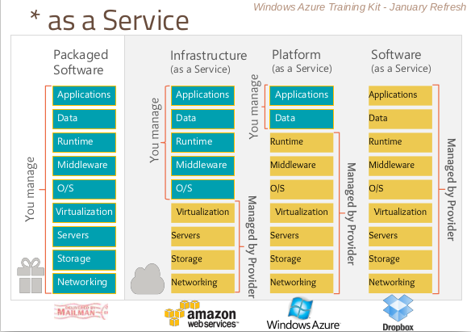

Concepto: Computación como Servicio
Se paga por lo que se usa
Periodo de prueba
Free Tier
Surge de la idea "Esto nos anda, ¿podemos venderlo?"
Definición
Permite acceso por red sencillo y a demanda a un grupo compartido de recursos de computación (red, servidores, almacenamiento, aplicaciones, servicios) que se puedan proveer de forma rapida y liberados con gestion minima de los proveedores del servicio.
Surgió como evolución y luego de la maduración de
Algunas características
Grid Computing
Utility Computing
Virtualización
Autonomous Computing
Segun capa que virtualiza
Segun capa que virtualiza
Nubes Públicas
Nubes Privadas
Hibridas
VPC
FaaS - Function as a Service
Desacoplar funcionalidad
Funcionalidad sin estado
Podemos hacerla con un FaaS
Ventajas